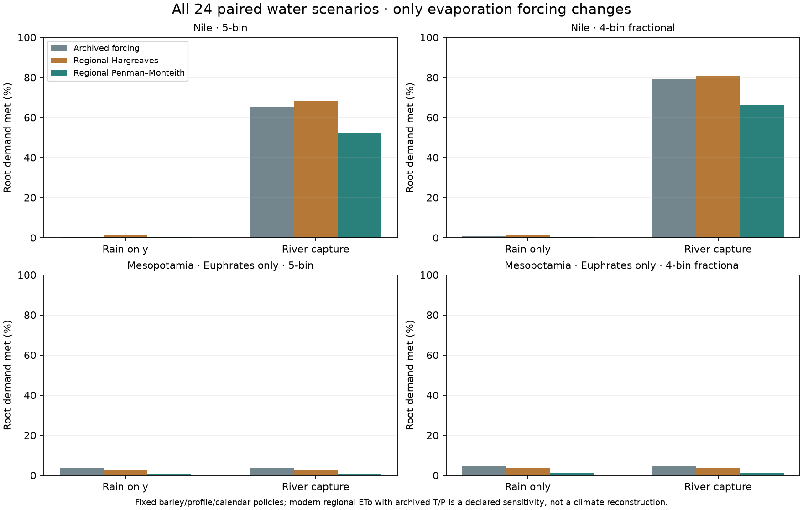
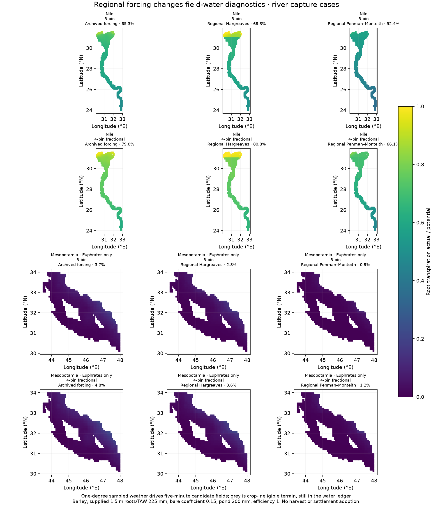

EARTH EVIDENCE · 14 NOVEMBER 2026
Regional evaporation forcing changes the field-water result
All 1,507 candidate fields now have an explicit regional weather assignment and paired forcing controls. The 24 retained water scenarios show material sensitivity to the reference method. These are conditional water maps, with no new harvest or settlement adoption.
The paired result
For the five-bin Nile crop with capture, root-demand coverage is 65.3% under archived forcing, 68.3% under regional Hargreaves and 52.4% under regional Penman–Monteith. The shorter supplied crop gives 79.0%, 80.8% and 66.1%. All cases retain the same soil, crop coefficient, river supply and pond/drainage rules. No calendar or parameter is selected from these scores.

Root-demand coverage is actual/potential root transpiration. It is not grain yield, total crop ET coverage, cultivated area or population. Mesopotamia remains Euphrates only; the Tigris is absent.
All candidates remain water consumers, including thermally ineligible grey fields. Five-minute field display does not imply five-minute weather resolution.
Full coverage with a declared sampling policy
Each field is assigned to the centre of its containing one-degree tile. The 30 fixed samples supply 54,810 complete 2020–2024 NASA POWER daily records. This is a sampling lattice, not NASA's native resolution or a downscaling model. Distances and provider grid elevations are exported for every field; no candidates are removed for being inconvenient.
| Region | Fields | Weather samples | Mean distance km | Max distance km | Archived ETo mm/year | Regional Hargreaves mm/year | Regional PM mm/year |
|---|
| Nile | 489 | 15 | 41.10 | 67.78 | 1,604.4 | 1,625.3 | 2,226.6 |
| Mesopotamia · Euphrates only | 1018 | 15 | 39.01 | 67.21 | 1,865.7 | 1,913.1 | 2,665.5 |
Annual reference-demand means above use candidate-area weights. Five-year Gregorian monthly totals map conservatively into the twelve existing equal model bins, including leap-day amounts. Hargreaves and PM share weather, solar geometry, grid assignment and temporal mapping; their difference isolates the method. Archived versus regional Hargreaves also changes weather source, period, geometry and aggregation.
Every paired field case
All cases fix barley, supplied 1.5 m roots (TAW 225 mm), bare coefficient 0.15, pond 200 mm and efficiency 1. Rain-only controls retain the same pond/drainage policy. “≥95% root” is an unvalidated water diagnostic, not productive hectares. Eight archived controls reproduce every original field/state/flux/basin array exactly.
24 scenarios
| Region | Calendar | Access | Evaporation forcing | Root demand met | Eligible km² | ≥95% root km² | Delivered km³ | Pond ET km³ | Cycles |
|---|
| Nile | 5-bin | Rain only | Archived forcing | 0.46% | 24,497 | 0 | 0.000 | 0.000 | 2 |
| Nile | 5-bin | Rain only | Regional Hargreaves | 1.04% | 24,497 | 0 | 0.000 | 0.000 | 2 |
| Nile | 5-bin | Rain only | Regional Penman–Monteith | 0.13% | 24,497 | 0 | 0.000 | 0.000 | 2 |
| Nile | 5-bin | Capture | Archived forcing | 65.33% | 24,497 | 0 | 21.913 | 7.939 | 2 |
| Nile | 5-bin | Capture | Regional Hargreaves | 68.27% | 24,497 | 1,071 | 22.510 | 7.889 | 2 |
| Nile | 5-bin | Capture | Regional Penman–Monteith | 52.44% | 24,497 | 0 | 27.984 | 10.153 | 2 |
| Nile | 4-bin fractional | Rain only | Archived forcing | 0.58% | 24,497 | 0 | 0.000 | 0.000 | 2 |
| Nile | 4-bin fractional | Rain only | Regional Hargreaves | 1.26% | 24,497 | 0 | 0.000 | 0.000 | 2 |
| Nile | 4-bin fractional | Rain only | Regional Penman–Monteith | 0.17% | 24,497 | 0 | 0.000 | 0.000 | 2 |
| Nile | 4-bin fractional | Capture | Archived forcing | 79.00% | 24,497 | 397 | 22.459 | 8.946 | 2 |
| Nile | 4-bin fractional | Capture | Regional Hargreaves | 80.82% | 24,497 | 6,048 | 23.026 | 8.857 | 2 |
| Nile | 4-bin fractional | Capture | Regional Penman–Monteith | 66.15% | 24,497 | 0 | 28.530 | 11.537 | 2 |
| Mesopotamia · Euphrates only | 5-bin | Rain only | Archived forcing | 3.69% | 63,986 | 0 | 0.000 | 0.000 | 2 |
| Mesopotamia · Euphrates only | 5-bin | Rain only | Regional Hargreaves | 2.80% | 63,986 | 0 | 0.000 | 0.000 | 2 |
| Mesopotamia · Euphrates only | 5-bin | Rain only | Regional Penman–Monteith | 0.89% | 63,986 | 0 | 0.000 | 0.000 | 2 |
| Mesopotamia · Euphrates only | 5-bin | Capture | Archived forcing | 3.69% | 63,986 | 0 | 0.595 | 0.000 | 2 |
| Mesopotamia · Euphrates only | 5-bin | Capture | Regional Hargreaves | 2.80% | 63,986 | 0 | 0.595 | 0.000 | 2 |
| Mesopotamia · Euphrates only | 5-bin | Capture | Regional Penman–Monteith | 0.89% | 63,986 | 0 | 0.595 | 0.000 | 2 |
| Mesopotamia · Euphrates only | 4-bin fractional | Rain only | Archived forcing | 4.76% | 63,986 | 0 | 0.000 | 0.000 | 2 |
| Mesopotamia · Euphrates only | 4-bin fractional | Rain only | Regional Hargreaves | 3.61% | 63,986 | 0 | 0.000 | 0.000 | 2 |
| Mesopotamia · Euphrates only | 4-bin fractional | Rain only | Regional Penman–Monteith | 1.18% | 63,986 | 0 | 0.000 | 0.000 | 2 |
| Mesopotamia · Euphrates only | 4-bin fractional | Capture | Archived forcing | 4.76% | 63,986 | 0 | 0.595 | 0.000 | 2 |
| Mesopotamia · Euphrates only | 4-bin fractional | Capture | Regional Hargreaves | 3.61% | 63,986 | 0 | 0.595 | 0.000 | 2 |
| Mesopotamia · Euphrates only | 4-bin fractional | Capture | Regional Penman–Monteith | 1.18% | 63,986 | 0 | 0.595 | 0.000 | 2 |
What remains unqualified
The substituted evaporation uses modern 2020–2024 model/satellite weather, while the frozen field temperature/rain inputs come from WorldClim 1970–2000. This is an evaporation-only sensitivity with an explicit period/input mismatch, not a consistent reconstruction of ancient climate. Coarse weather cells can mix valley, desert, coast and elevated terrain. Grid completeness is not local validation.
Constant legacy crop demand, Kcmax, exposed soil fraction, root depth, soil profile and inundation/drainage remain supplied approximations, without local or wind/humidity adjustment. No point ratios, fitted correction or crop-stage curve is applied. Neither method is measured crop ET, and all cases are exposed development.
The shared adapter now accepts explicit world extraterrestrial radiation and weather, so its algebra can serve Earth or another world. It does not invent missing vapour, 2 m wind or solar data from the old fantasy harvest cache. That connection remains a separate input-qualification task.
Independent checks and complete downloads
182 controls pass. The shared adapter has 17,000 independent scalar/Decimal checks and 3,600 bin-amount checks. Regional review reconstructs all 931,770 computed weather cells and 1,507 assignments. Field review replays all 6,835,752 final-cycle field-steps, checks annual field states/fluxes, monthly basin ledgers, daily basin stocks and all 18,084 CSV rows. Every case reaches periodic stocks in two cycles. Seven fresh numeric exports reproduce byte for byte; 923 protected files remain unchanged.
Declared protocol · Shared-adapter checks · Regional weather/coverage facts · Independent weather review · All 24 field results · Independent field review/replay · Regional forcing arrays · All 1,507 field assignments (CSV) · All 54,810 computed weather days (gzip CSV) · Field states/fluxes and basin ledgers · All 18,084 field rows (gzip CSV) · All frozen raw weather and source receipt (ZIP)
Next dependency
Resolve climate period/grid consistency and qualify regional weather before adopting a reference-forcing rule. Keep local crop phenology, basal diffusion versus root uptake, canopy/root development, soil and pond/drainage evidence open. Tigris, shared Earth/fantasy river flow and independent regions remain required before freezing harvest translation and testing Nile gain and Mesopotamian non-inflation.
Release-3 settlements and marketed share 0.3923 remain current; whole-empire Egypt calibration still fails. These maps do not change food supply, residents, institutions or authority.